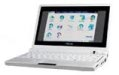

Asus Eee PC
Archivierte Anleitung
Dieser Artikel wurde archiviert, da er - oder Teile daraus - nur noch unter einer älteren Ubuntu-Version nutzbar ist. Diese Anleitung wird vom Wiki-Team weder auf Richtigkeit überprüft noch anderweitig gepflegt. Zusätzlich wurde der Artikel für weitere Änderungen gesperrt.
Zum Verständnis dieses Artikels sind folgende Seiten hilfreich:
 Seit Mitte Januar 2008 ist der Asus Eee PC offiziell in Deutschland erhältlich. Der erste Eee PC (Modell 701) wird standardmäßig mit einer angepassten Variante von Xandros Linux ausgeliefert. Neuere Eee PCs (900er und 1000er Serie) werden teilweise auch in Kombination mit Windows XP oder Windows 7 vertrieben.
Installation¶
Hinweise zur Installation, Einrichtung und Benutzung von Ubuntu auf dem Eee PC finden sich im Wegweiser Netbooks. Dort werden auch weitere Installationskandidaten wie auf Eee PCs angepassten Derivate besprochen. In diesem Artikel werden zusätzliche oder abweichende Anpassungen für Eee PCs beschrieben. Viele der in diesem Artikel angesprochenen Anpassungen sind in den angepassten Derivaten bereits integriert.
Für die Auswahl des Installationsmediums (z.B. der bootbare USB-Stick) muss während des Bootvorgangs Esc gedrückt gehalten werden und in dem erscheinenden Menü ausgewählt werden.
Partitionierung¶
Dieser Abschnitt [6] geht auf Besonderheiten bei der Partitionierung von Eee-Modellen bieten. Eine Übersicht verbauter Festspeicher (Festplatten und SSD-Chips) in verschiedenen Modellen findet sich hier.
Experten-Info:
Moderne SSD-Chips, wie sie in den Eee-PCs verbaut sind, haben durch Wear Leveling eine mit herkömmlichen Festplatten vergleichbare Lebenserwartung.
Nach der "normalen" Installation funktionieren - je nach Modell - nicht alle Komponenten des Eee PC. Die folgende Liste gibt eine Übersicht zu Komponenten, die mit der jeweiligen Ubuntu-Version noch nicht funktionieren und welche Anpassungen notwendig sind.
Eee 701¶
Der EEEPC 701 verfügt über 4 GiB Speicher aus aufgelöteten SSD-Chips. Hier wird der Speicher schnell knapp und kann bei einem Defekt so gut wie nicht ausgetauscht werden. Zum Partitionieren gibt es folgende Optionen:
| Option | Vorteile | Nachteile |
| System komplett auf SSD (/) | höchste Geschwindigkeit | Speicherplatz knapp, SSD bei Verschleiß kaum austauschbar |
| System auf SSD (/), Homeverzeichnis auf SD-Karte (/home) | Speicherplatzproblem etwas entschärft | SSD bei Verschleiß kaum austauschbar |
| System komplett auf SD-Karte (/) | SD-Karte bei Defekt leicht austauschbar, ab 8 GiB-Karte Speicherplatzproblem gelöst | Datentransferrate der SD-Karte nicht so hoch |
Man sollte bei den SD-Karten "Class-6"-Karten nehmen, da diese am schnellsten sind. Karten der Größen 32, 16, 8 und 4 GiB sind erfolgreich getestet worden.
Eee 1000¶
Der Eee 1000 (ohne H) verfügt über zwei SSDs. Die schnellere 8 GiB große SSD (/dev/sda) ist nur erreichbar, wenn das Gehäuse komplett entfernt wird und daher im Gegensatz zur zweiten 32 GiB großen SSD (/dev/sdb) nicht leicht austauschbar. Nachdem man alle vorhandenen Partitionen gelöscht hat, bietet es sich daher an, /dev/sda als root-Partition (/) und /dev/sdb als /home zu nutzen. Eine Swap-Partition legt man am besten auch auf die große Platte.
Eee 1001HA¶
Es scheint sich um die abgespeckte Version des 1005HA zu handeln, da bei einem BIOS-Upgrade das 1005HA Bios genutzt wird. Bluetooth ist beim 1001HA im Vergleich zum 1005HA nicht vorhanden.
Boot Booster¶
900er, 1000er, 1005er: Wer den Boot Booster im BIOS aktivieren will, benötigt eine mindestens 8 MiB große Partition auf der ersten Festplatte, die bei der Auslieferung bereits besteht. Hat man diese gelöscht, erstellt man eine neue primäre EFI Partition [6] dieser Größe. Sollte das Partitionsprogramm nicht die Möglichkeit bieten, EFI-Partitionen anzulegen (z.B. GParted), erstellt man stattdessen eine unformatierte Partition und führt anschließend folgendes Kommando aus:
Achtung!
X ist im folgenden Befehl durch die entsprechende Partitionsnummer zu ersetzten. Wird die falsche Partition gewählt, droht Datenverlust.
sudo sfdisk --change-id /dev/sdaX ef # /dev/sdaX ist durch den Namen der Partition zu ersetzen
Abschließend kann man den Boot-Booster im BIOS ( F2 während des Starts drücken) aktivieren. Dieser funktioniert nach einem weiteren Neustart.
Modelle¶
701 4G¶
Der Kartenleser funktioniert nicht, wenn im BIOS (Systemstart Taste F2) unter "Advanced" > "OS Installation" die Option "START" eingestellt ist. Die Option muss auf "FINISHED" eingestellt sein.
900 & 901¶
Ubuntu 10.04¶
WLAN funktioniert erst nach Installation der Backports-Module (linux-backports-modules-wireless-lucid-generic)
Ubuntu 10.10¶
Das eingebaute Realtek 8187SE WLAN Modul funktioniert zwar "out of the box", aber die Verbindung ist instabil und der Rechner stürzt ab, wenn man die WLAN Funktion per Funktionstasten (FN + F2) ein- oder ausschalten will. Abhilfe: das fehlerhafte Kernelmodul
rtl8187segegen das verbesserte Kernelmodulr8187seersetzen. Dieses kann als rtl8187se_linux_26.1030.1201.2009.release.tar.gz heruntergeladen werden und wird gemäß der beigelegten Readme-Datei installiert. Weitere Informationen hierzu in diesem Blogeintrag . Die Anleitung ist ohne Weiteres auf Ubuntu 10.10 übertragbar.
. Die Anleitung ist ohne Weiteres auf Ubuntu 10.10 übertragbar.
1000 & 1000H¶
Ubuntu 10.04¶
Einige Funktionstasten funktionieren bei einer Standardinstallation nicht:
Fn + F10 (Stummschalten)
Fn + F11 (Lautstärke verringern)
(Hotkeys, etc)
Hinweis:
Falls ein Schritt dieser Anleitung nicht durchgeführt wird, ist das Ergebnis nicht optimal, im Test gab es z.B. sonst Probleme mit der Steuerung der Helligkeit, verschiedene Tasten funktionierten nicht oder eee-control konnte nicht geladen werden.
Für den Asus eee 1000h sind alle Funktionstasten und Hotkeys unter Ubuntu 10.04 mit folgender Anleitung benutzbar.
Neuste Firmware unter http://support.asus.de/download/download.aspx?SLanguage=de-de für den 1000h herunterladen und flashen. Erfolgreich getestet wurde die Version: BIOS 2204.
Folgende zusätzliche Bootparameter in grub übernehmen:
acpi_backlight=vendor acpi_osi=Linuxeee-control ppa aktivieren und installieren, Version: 0.9.6.5 erfolgreich getestet. PPA aktivieren mit:
sudo add-apt-repository ppa:eee-control/eee-control
Um die Fremdquelle zu authentifizieren, kann man den Signierungsschlüssel mit folgendem Befehl importieren:
sudo apt-key adv --recv-keys --keyserver keyserver.ubuntu.com 9FFD762E
und installieren:
sudo apt-get install eee-control
Falls Probleme mit dem Sound bestehen (z.B. Sound nur über Kopfhörer) im Terminal:
gksudo gedit /etc/modprobe.d/alsa-base.conf
und ans Ende der Datei folgendes eintragen:
options snd-hda-intel model=auto
speichern und einmal neu starten.
Zwei-Finger Scrollen - sowohl horizontal als auch vertikal möglich - lässt sich prima mit dem gnome Maus tool aus der Systemsteuerung aktivieren.
1005HA-M / 1005HA-H & 1005HAG / 1005HGO¶
Ubuntu 10.04¶
Alles wichtige funktioniert einwandfrei „out of the box”. Es funktionieren nicht:
Fn + F3 (Touchpad deaktivieren) und die extra Taste dafür,
Fn + F4 (Bildschirmauflösung verändern),
Fn + F9 (Taskmanager starten),
Fn + F10 (Alles Stummschalten, Sound Mute),
Fn + F11 (Sound leiser),
Fn + F12 (Sound lauter),
Tipp: BIOS 1301 (Improve Wifi performance)
Zweifingerscrollen wird durch Erstellen einer Datei /etc/hal/fdi/policy/11-x11-synaptics.fdi als root mit folgendem Inhalt aktiviert:
<?xml version="1.0" encoding="ISO-8859-1"?>
<deviceinfo version="0.2">
<device>
<match key="info.capabilities" contains="input.touchpad">
<merge key="input.x11_driver" type="string">synaptics</merge>
<merge key="input.x11_options.SHMConfig" type="string">True</merge>
<merge key="input.x11_options.TapButton1" type="string">1</merge>
<merge key="input.x11_options.TapButton2" type="string">3</merge>
<merge key="input.x11_options.EmulateTwoFingerMinZ" type="string">10</merge>
<merge key="input.x11_options.EmulateTwoFingerMinW" type="string">7</merge>
<merge key="input.x11_options.VertTwoFingerScroll" type="string">1</merge>
<merge key="input.x11_options.HorizTwoFingerScroll" type="string">1</merge>
</match>
</device>
</deviceinfo>Probleme bereiten:
WLAN: Bei manchen Geräten bricht die WLAN Verbindung in kurzen Abständen ab. Lösung: Linux Backport Module installieren
Falls keine Verbindung zu einem WLAN möglich ist, lohnt es sich das komplette Networking inklusive des Kernelmoduls
ath9kneu zu laden:sudo service network-manager stop sudo /etc/init.d/networking stop sudo modprobe -r ath9k lsmod | grep ath #es sollte keine Ausgabe geben sudo modprobe -v ath9k sudo service networking start sudo service network-manager start
Die Laufzeit ist besser als unter Windows 7, Bootzeit 45s.
Die Laufzeit ist schlechter als unter Windows XP, PowerTOP spricht von 7,2 Watt Verbrauch bei aktiviertem WLAN, Bildschirmhelligkeit auf der zweitniedrigsten Stufe, Webcam und Cardreader deaktiviert.
1001P¶
Das Modell ist ähnlich zum 1005P, nur ohne Bluetooth und mit vorinstalliertem Win XP anstatt Win7. Mit aktuellem (oder aktualisiertem) BIOS ist nahezu alles "out of the box" mit Ubuntu 10.04 oder UNR 10.04 lauffähig. Webcam, Sleepmodes, Steuerungstasten für WLAN und Lautstärke, etc. funktionieren einwandfrei. Folgende drei Anpassungen sind jedoch noch notwendig, wenn man den Standard-Kernel 2.6.32 verwendet:
Displayhelligkeit mit Fn + F5 und Fn + F6 regeln: Fixing brightness controls
WLAN: Verwendung der neuesten compat-wireless Treiber als Kernelmodul, wie unter folgendem Link beschrieben: Fixing wireless
Mikrofon: Das Mikrofon wird standardmäßig als "Stereo" angesprochen, obwohl es "Mono" ist. Deshalb funktioniert es nur, wenn man sich z.B. das Paket pavucontrol[1] nachinstalliert. Dieses wird dann mit dem Befehl
pavucontrol
gestartet. Dann setzt man unter "Eingabegeräte" einen der beiden Stereo-Kanäle des Mikrofons auf 0%. Sollte danach der Ton nicht mehr zu hören sein, muss unter "Ausgabegeräte" "Analog Speakers" anstatt "Analog Output" gewählt werden.
1005P / 1005PE¶
Ubuntu 10.04¶
Das Meiste funktioniert „out of the box”, lediglich beim Touchpad und WLAN sind einige Nacharbeiten notwendig:
Touchpad: Zweifingerscrolling lässt sich sehr einfach mit einem graphische Konfigurationstool aus den Quellen aktivieren
gpointing-device-settings[1]
alternativ hilft dieser Foreneintrag weiter.
WLAN: mit den aktuellen Updates funktioniert WLAN auch ohne jegliches Zutun
mit NdisWrapper und dem Windows-Treiber netathw.inf
oder nativ: Variante A
bzw. Variante b
Fn -Tasten, die nicht funktionieren, lassen sich mit eee-control belegen.
Bei Geräten mit der BIOS-Version 1103 funktionieren die Tastenkombinationen Fn + F10 , Fn + F11 sowie Fn + F12 zur Regulierung der Lautstärke nicht korrekt. Zudem lässt sich nicht die volle Helligkeit des Displays einstellen. Beide Funktionseinschränkungen lassen sich mit einem Eintrag in der GRUB-Konfiguration beheben.
Die Datei /etc/default/grub mit root-Rechten öffnen[4]
Die Zeile
GRUB_CMDLINE_LINUX_DEFAULT="quiet splash"
ergänzen zu
GRUB_CMDLINE_LINUX_DEFAULT="quiet splash acpi_osi=Linux acpi_backlight=vendor"
Terminal öffnen[3] und die GRUB-Konfiguration updaten
sudo update-grub
Rechner neustarten.
Weitere Infomationen (etwa für Mikrofoneinstellungen) siehe in diesem Artikel den Abschnitt 1001P oder folgenden Eintrag im Forum
1005PX¶
Abweichungen zu dem Modell 1005P gibt es so gut wie keine, nur das interne Mikrofon funktioniert erst nach der Installation der LinuxAlsaDriverModules (Anleitung siehe Installing Linux AlsaDriver Modules ).
1015PED¶
Ubuntu 10.10¶
Der Sound macht Probleme, das Mikrofon funktioniert - zumindest unter Skype - nicht. Lösung: PulseAudio deinstallieren. Stattdessen auf den ALSA-Mixer und dessen grafische Oberfläche ausweichen. Für GNOME ein Terminal öffnen[3] und
sudo apt-get remove pulseaudio
eingeben und ausführen. Dann genauso mit:
sudo apt-get install alsa-utils gnome-alsamixer
Falls GNOME nicht benutzt wird, ist der Weg zum Ziel:
sudo apt-get remove pulseaudio
und dann:
sudo apt-get install alsa-utils
Dann sollte ggfs. noch eine grafische Oberfläche für den jeweiligen Desktop installiert werden,
1101HA¶
Ubuntu 10.04¶
Alles wichtige funktioniert „out of the box” (nach Aktualisierung).
Networkmanager wicd 1.7.0 läuft stabil
Sound nach midi-Geräteeinstellung ok
die meisten Funktionstasten und ACPI funktionieren, nachdem die Datei /etc/default/grub bei
GRUB_CMDLINE_LINUX=" ...... "um die Einträgeacpi_osi=Linuxundacpi_backlight=vendorergänzt wurde. Fertig sieht es dann so aus:GRUB_CMDLINE_LINUX="acpi_osi=Linux acpi_backlight=vendor". Nicht vergessen: Danach muss GRUB aktualisiert und der Rechner neu gestartet werden.keine Probleme nach BIOS Update auf 0323 vom 30.12.2009 (über die unten beschriebene Variante #2 (#1 nicht getestet)(Asus Eee PC) oder parallele XP-Installation und Asus-Update-Service), danach Verbesserung von s3 resume, Lüftersteuerung, Batterielaufzeit u.a.
Die Grafikkarte wird nicht vollständig unterstützt (Intel GMA500 Poulsbou:nur verringerte Auflösung) -> Lösungsansatz: HardwareSupportComponentsVideoCardsPoulsbo (danach geht nur 1366 x 768)
Einige Funktionstasten funktionieren nicht:
z.B.:
Fn + F5 (Bildschirm dunkler),
Fn + F6 (Bildschirm heller),
andere Funktionstasten die nicht mit der Grafik zusammenhängen funktionieren (WLAN, Lautstärke, ...)
keine Probleme nach BIOS Update auf 0323 vom 30.12.2009 (über parallele XP-Installation und Asus-Update-Service, andere aber nicht getestete Varianten siehe unten), danach Verbesserung von s3 resume, Lüftersteuerung, Batterielaufzeit u.a.
1201HA¶
Ubuntu 10.04¶
Die Grafikkarte GMA500 stellt das größte Problem dar, denn für diese sind die Treiber gerade erst in der Entwicklung. Mit dieser Anleitung kann man die aktuellsten Treiber installieren und so mindestens schon einmal die richtige Auflösung einstellen: HardwareSupportComponentsVideoCardsPoulsbo
Hotkeys und Mikrofone: [ubuntu:HardwareSupport/Machines/Netbooks#Asus Eee 1201HA]
Experten-Info:
Aufgrund des extrem langsamen Prozessors, der hier aus Gründen der langen Laufzeit zusätzlich zum internem Akku verbaut wurde, kann jedem Fenster buchstäblich beim Aufbauen oder Schließen zugesehen werden. Das Netbook benötigt zudem sehr lange zum Booten (bis zu 2,5 Min.) - für Linux absolut nicht zu gebrauchen.
1201N¶
Alles bis auf die Lautstärketasten funktioniert nach der automatischen Installation von UNR 10.04. Es wird empfohlen, den closed source nvidia Treiber hinzuzufügen.
Fn + F10 (Alles Stummschalten, Sound Mute),
Fn + F11 (Sound leiser),
Fn + F12 (Sound lauter),
können mit folgendem Workaround zum Laufen gebracht werden:
Die Datei /etc/default/grub mit root-Rechten öffnen[4]
Die Zeile
GRUB_CMDLINE_LINUX_DEFAULT="quiet splash"
ergänzen zu
GRUB_CMDLINE_LINUX_DEFAULT="quiet splash acpi_osi=Linux acpi_backlight=vendor"
Restliche Sonderfunktionen (ausgenommen nicht genannte):
Fn + F7 (Display aus ?),
Fn + F9 (Touchpad aus),
funktionieren aber nicht.
Außerdem klappt trotz Aktivierung die Multitouchfunktion des Touchpads nicht. Mehrere Finger verursachen wildes zufälliges Klicken an verschiedenen Stellen auf dem Desktop.
R252B¶
Der Rechner schaltet sich beim Herunterfahren nicht ab. Ab Ubuntu 12.10 ist dieser Fehler behoben.
Tastatur und Touchpad bleiben sporadisch hängen und sind nicht mehr bedienbar. Lt. Forum sollte man die folgenden Bootoptionen in der /etc/default/grub mit Rootrechten [4] eintragen: Die Zeile
GRUB_CMDLINE_LINUX_DEFAULT="quiet splash"
ergänzen zu
GRUB_CMDLINE_LINUX_DEFAULT="quiet splash 8042.reset i8042.nomux"
T101MT¶
Unter Ubuntu 11.04 "out of the box". Leider funktioniert aufgrund eines Bugs der "simulierte Kontextklick" nicht (Rechtsklick bei Gedrückthalten des Stylus) noch nicht (unter Ubuntu 10.10 dagegen problemlos).
Unter Ubuntu 10.10 funktioniert der Touchscreen nicht und es sind noch folgende Schritte notwendig: T101MT und Howto Ubuntu Linux on T101MT . Des Weiteren kann die Webcam (zumindest unter Ubuntu 10.10) ein umgekehrtes Bild anzeigen. Außerdem klappt die Multitouch-Funktion des Touchpads nicht sauber, mehrere Finger verursachen wildes zufälliges Klicken an verschiedenen Stellen auf dem Desktop. Bei Firefox sollte man das Plugin "Grab and Drag" installieren, um Webseiten komfortabel mit der Hand scrollen zu können
Weitere Probleme und Lösungen¶
Array-Kernel¶
Der frühere empfohlene Array.org Eeepc Kernel ist durch die Weiterentwicklung von Ubuntu überflüssig und inzwischen auch nicht verfügbar.
USB-Problem¶
Nach einer Installation von von einem USB-Stick kann es vorkommen, dass weitere USB-Sticks als CD/DVD-Laufwerke eingebunden werden. In dem Fall muss man zunächst herausfinden, unter welchem Namen der USB-Stick eingebunden wurde, z.B: /dev/sdb1, und in der Datei /etc/fstab mit Administrationsrechten die entsprechende Zeile mit einem führenden # auskommentieren, z.B.:
# /dev/sdb1 /media/cdrom0 udf,iso9660 user,noauto,exec,utf8 0 0
RAM aufrüsten (nur EEEPC 701)¶
Es kann bei diesem Modell sinnvoll sein, den RAM aufzurüsten, vor allem wenn man den Swap-Speicher weglassen will. Da der EEEPC 701 standardmäßig nur mit 512 MiB RAM ausgeliefert wird, muss man den RAM gegen einem 1 oder 2 GiB-Riegel austauschen (nur ein Steckplatz vorhanden). Der RAM befindet sich unter einer Klappe an der Unterseite des Netbooks.
Touchpad¶
Auch wenn die Touchpads der 900er und 1000er Serie nur als PS2-Maus erkannt werden, kann es direkt, wie in der Tabelle beschrieben, mit mehreren Finger genutzt werden (Multitouch).
| Touchpad 900er, 1000er | |
| Finger | Maustaste |
| 1 |  |
| 2 |  |
| 3 |  |
Erweiterte Multitouch-Fähigkeiten und Touchpadfunktionen (z.B. deaktiveren beim Tippen, siehe Touchpad) kann man mit dem Elantech Treiber nutzen. Ist der Array-Kernel installiert, ist der Treiber bereits vorhanden, jedoch noch nicht aktiviert, da dieser derzeit noch einige Probleme bereitet. Um den Elantech Treiber zu aktivieren, muss in die eventuell neu anzulegende Datei /etc/modprobe.d/eeepc noch folgende Zeile eingetragen werden[4]:
options psmouse elantech=1
Wird HAL verwendet, muss die Datei /etc/hal/fdi/policy/shmconfig.fdi mit Rootrechten erstellt oder falls schon vorhanden, editiert werden:
1 2 3 4 5 6 7 8 9 10 11 12 13 14 | <?xml version="1.0" encoding="ISO-8859-1"?> <deviceinfo version="0.2"> <device> <match key="info.product" string="ETPS/2 Elantech Touchpad"> <merge key="input.x11_options.SHMConfig" type="string">True</merge> <merge key="input.x11_driver" type="string">synaptics</merge> </match> </device> <device> <match key="info.linux.driver" string="psmouse"> <merge key="input.x11_options.SHMConfig" type="string">True</merge> </match> </device> </deviceinfo> |
Das Touchpad lässt sich mit einer angepassten Version des Programms gsynaptics konfigurieren. Alternativ zu gsynaptics kann man versuchen, die Mausbeschleunigung mit xset einzustellen. Beispiele:
xset m 7 10 & # schnelle Maus xset m 3 10 & # normal schnelle Maus xset m default & # Werkseinstellungen
Weitere Hinweise sind der Manpage von xset zu entnehmen.
Hardware steuern¶
Bei der Steuerung der Hardware helfen verschiedene Zusatzprogramme.
Achtung!
Man sollte sich für eine Variante (Jupiter, eee-control oder eee-applet) entscheiden. Die gleichzeitige Installation mehrerer dieser Programme kann unvorhersagbare Konsequenzen haben.
Jupiter¶
Jupiter diente zur Steuerung des Energieverbrauchs, Ändern der Bildschirmauflösung/-ausrichtung, Aktivierung von Bluetooth, Touchpad, Wlan und weiterer modellabhängiger Hardware. Auf Eee PCs kann zusätzlich der Vorteil von SHE (Super Hybrid Engine) genutzt werden.
eee-control¶
Hinweis:
eee-control benötigt den array.org-Kernel, sonst funktioniert es nicht.
Zur Steuerung von Bluetooth, Wireless, Kamera und Kartenleser (je nach Modell) sowie des Energieverbrauchs und die Belegung der Hotkeys. Zusätzlich lässt sich mit eee-control noch eine intelligente Lüftersteuerung aktivieren. Zur Installation muss man ein PPA aktivieren:
Adresszeile zum Hinzufügen des PPAs:
ppa:eee-control/eee-control
Hinweis!
Zusätzliche Fremdquellen können das System gefährden.
Ein PPA unterstützt nicht zwangsläufig alle Ubuntu-Versionen. Weitere Informationen sind der  PPA-Beschreibung des Eigentümers/Teams eee-control zu entnehmen.
PPA-Beschreibung des Eigentümers/Teams eee-control zu entnehmen.
Damit Pakete aus dem PPA genutzt werden können, müssen die Paketquellen neu eingelesen werden.
Nach dem Aktualisieren der Paketquellen kann folgendes Paket installiert[1] werden:
eee-control (ppa)
 mit apturl
mit apturl
Paketliste zum Kopieren:
sudo apt-get install eee-control
sudo aptitude install eee-control
Hinweis:
Unter Umständen kann es Probleme mit dem starten von eee-control geben, abhängig vom verwendeten Eee-PC und der BIOS-Version. Im Problemfall bitte die Problembehebung weiter unten beachten.
Nach der Installation platziert der Befehl eee-control-tray ein Symbol im Systemabschnitt der Kontrollleiste, über das die Hardware gesteuert werden kann und die Tastenbelegungen der Sondertasten verändert werden kann. In Autostart ist beschrieben, wie dieser Befehl beim Start automatisch ausgeführt werden kann. In neueren Versionen sollte dies aber automatisch erfolgen.
Auch in eee-control gibt es die Möglichkeit, die Taktfrequenz über den FSB zu ändern. Sollte es damit Probleme geben, kann es daran liegen, dass die Methode zur Kontrolle der Taktfrequenz nicht gefunden wird. Es gibt zwei Möglichkeiten zur Lösung des Problems:
Man ändert in der Datei /etc/eee-control.conf die Methode, mit der die Taktfrequenz gesteuert wird. Die verschiedenen Methoden stehen in der Datei beschrieben und können hinter
fsb-method:
eingetragen werden [3].
Man findet die Kontrolldatei für die voreingestellte
she-Methode. Der korrekte Pfad muss in der Variablelocationsder Datei /usr/lib/python2.6/dist-packages/EeeControl/she.py eingetragen sein [3]. Ein Eintrag für locations mit allen bisher bekannten Pfaden ist nachfolgend dargestellt. Dabei ist unbedingt auf die korrekte Einrückung zu achten, da es sich bei der verwendeten Sprache um Python handelt.
1 2 3 4 5 6 7 | class SHE: # Possible locations of the control file locations = [ "/proc/acpi/asus/cpufv", "/sys/devices/platform/eeepc/she", "/sys/devices/platform/eeepc/cpufv" ] |
Problembehebung¶
Fehlermeldung beim Überfahren des Applets:
"Fehler beim Kommunizieren mit eee-control-daemon!"
Wenn dieser Fehler auftritt und sich auch nicht mit einem einfachen Neustart des Dienstes eee-control beheben lässt, so liegt das an der BIOS-Version des jeweiligen Eee-PCs. Man kann entweder das BIOS downgraden oder aber die daemon-Datei bearbeiten. Dazu geht man wie folgt vor:
find /sys/ | grep brightness
Ist das Resultat
/sys/devices/virtual/backlight/acpi_video0/brightness
dann mit Root-Rechten
elif os.path.exists("/sys/class/backlight/eeepc/brightness"):
brn_path = "/sys/class/backlight/eeepc/brightness"in den Zeilen 85-86 der Datei /usr/bin/eee-control-daemon nach
elif os.path.exists("/sys/class/backlight/acpi_video0/brightness"):
brn_path = "/sys/class/backlight/acpi_video0/brightness"ändern. Anschließend sollte ein Neustart des Systems durchgeführt werden.
Hinweis:
Dieses HowTo wurde mit einem neuen 1001P und 1005HA-H erfolgreich getestet!
Ubuntu 10.04¶
Hier ist die Bootoption "acpi_osi=Linux" anzugeben. Dazu bearbeitet [4] man, wie in Grub 2 Konfiguration beschrieben, die /etc/default/grub, wobei die Zeile
GRUB_CMDLINE_LINUX_DEFAULT="quiet splash"
um die Option "acpi_osi=Linux" ergänzt wird:
GRUB_CMDLINE_LINUX_DEFAULT="quiet splash acpi_osi=Linux"
Nun aktualisiert man die Konfiguration von GRUB 2 mittels des Befehls [3]:
sudo update-grub
Ab dem nächsten Neustart ist die Änderung aktiv.
Achtung!
Es kann passieren, dass danach die WLAN-Schnittstelle nicht erkannt wird. Folgendes schafft beim 1001HA und beim 1005HA Abhilfe:
sudo mkdir -p /etc/Wireless/RT2860STA/ sudo touch /etc/Wireless/RT2860STA/RT2860STA.dat sudo service network-manager restart
Mit einem neuen 1001HA und 1005HA-H erfolgreich getestet!
eee-applet¶
Ab Ubuntu 8.10 steht zusätzlich das Eee-Applet zur Verfügung, mit dessen Hilfe man den Prozessor übertakten kann, die Lüfter steuern kann sowie Kamera, Cardreader und WLAN (de-) aktivieren kann. Falls das Applet nicht mit installiert wird, kann man es über das Paket
eee-applet (universe)
mit apturl
Paketliste zum Kopieren:
sudo apt-get install eee-applet
sudo aptitude install eee-applet
installieren. Dabei müssen auch die Backports-Module installiert sein.
Prozessortaktung anpassen¶
Bei einem normalen Start von Ubuntu lädt das System (leider) keinen Treiber (den sogenannten "Governor") für den Celeron Prozessor (z.B. beim 701). Dies bedingt, dass der Prozessor ständig mit der höchsten Taktfrequenz läuft. Dies lässt sich durch das Laden des Kernelmodules [5] p4-clockmod beheben. Anschließend kann man einen anderen "Scaling Governor" einstellen, z.B. "ondemand" oder "conservative". Wie das geht, steht im Artikel Prozessortaktung. Dort findet man auch weitere Informationen zum Thema.
Bildschirm abdunkeln¶
Um unterwegs den Bildschirm schnell abdunkeln zu können, kann man sich eine Datei mit dem Inhalt
#!/bin/sh xset dpms force off
anlegen und als Anwendungsstarter ins Panel bzw. Menü legen.
BIOS aktualisieren¶
Achtung!
BIOS-Updates sind gefährlich. Sollte man sich nicht sicher sein alles richtig zu machen, sollte man sich Hilfe suchen. Auf keinen Fall darf man den Rechner während eines BIOS-Updates ausschalten, es könnte ihn zerstören. Ein Update nur mit vollem Akku und eingestecktem Netzteil vornehmen!
Variante 1 (aufwendiger)¶
Um ein BIOS-Update des EEE-PC 900 vorzunehmen, war bisher ein Windows-System nötig. Es geht aber auch problemlos unter Linux. Zum Update werden benötigt:
Eine SD-Karte oder ein USB-Stick
Die Datei drdosmin.img (z.B. von Biosflash.com)
Die neue BIOS-Datei aus dem Supportbereich von Asus
Das Asus "DOS Flash tool", das man im Supportbereich von Asus findet
Man lädt alle Dateien herunter, öffnet ein Terminal [3] und entpackt sie in einen Ordner.
unzip AFUDOSXXX.zip unzip ASUS_900_XXX.zip
Die Dateinamen sind den heruntergeladenen Versionen anzupassen. Nun muss das Bootimage auf die SD-Karte kopiert werden:
dd if=drdosmin.img of=/dev/sdx
Dabei muss /dev/sdx der Gerätedatei des USB-Stick oder der SD-Karte entsprechen. Nun kopiert man AFUDOS und die neue BIOS-Datei auf die SD-Karte [3]:
cp AFUDOSXXX.exe /media/NO\ NAME/afudos.exe cp ASUS-900-XXXX.rom /media/NO\ NAME/xxx.rom
Dabei sind die Namen der einzelnen Dateien den entsprechend genutzen Versionen anzupassen. Sollte die SD-Karte in einem anderen Verzeichnis gemountet werden, muss dies natürlich auch berücksichtigt werden.
Beim Neustart kann man nun durch Drücken von Esc das Bootmenü aufrufen. Bootet man nun von SD-Karte, gelangt man in die DOS-Eingeabeaufforderung. Durch Eingabe von:
afudos.exe /ixxx.rom
wird das BIOS-Update gestartet. Nach Abschluss des Updates wird man aufgefordert, den Computer auszuschalten. Einen Neustart später hat man das neue BIOS in Gebrauch.
Variante 2 (einfacher)¶
Die zweite, auffällig einfachere Variante kommt sogar ganz ohne Betriebssystem aus (getestet auch mit neuerem Modell 1005). Dazu benötigt man:
Einen USB-Stick
Die BIOS-Datei aus dem Asus Support-Bereich
Den USB-Stick formatiert man zunächst in FAT16. Danach kopiert man die BIOS-Datei als [Nummer].ROM auf den Stick, wobei [Nummer] die Modellnummer des eigenen eeePCs (900, 700, ...) entspricht. Nun entfernt man alle USB-Geräte bis auf den USB-Stick und startet den Rechner neu. Beim Bootscreen kann man nun mittels Alt + F2 in den Update-Modus wechseln, in dem das BIOS aktualisiert wird.
Achtung!
Auch wenn es zwischendurch so aussehen kann, als wenn das System nicht mehr reagiert, sollte man den Vorgang auf keinen Fall unter- oder abbrechen! Dabei sollte das Netbook unbedingt an die Stromversorgung angeschlossen sein.
Am Ende wird man aufgefordert, das System neuzustarten. Beim Boot kommt eine Beschwerde wegen eines Checksum-Fehlers, was allerdings normal ist. Man sollte trotzdem die Einstellungen überprüfen, weil es schon vorgekommen ist, dass einige Geräte nach einem Update deaktiviert waren.

- Erstellt mit Inyoka
-
 2004 – 2017 ubuntuusers.de • Einige Rechte vorbehalten
2004 – 2017 ubuntuusers.de • Einige Rechte vorbehalten
Lizenz • Kontakt • Datenschutz • Impressum • Serverstatus -
Serverhousing gespendet von